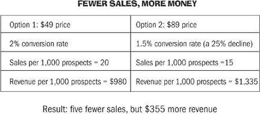

As we’ve seen, it’s usually much more important to focus your efforts on making money as soon as possible than on borrowing startup capital. In different ways, many of our case studies focused on three key principles that helped them become profitable (either profitable in the first place or more profitable as the business grew). I’ve noticed that the same thing holds true in my businesses. The more I focus on these things, the better off I am. In short, they are as follows:
1. Price your product or service in relation to the benefit it provides, not the cost of producing it.
2. Offer customers a limited range of prices.
3. Get paid more than once for the same thing.
We’ll look at each of them below.
Principle 1: Base Prices on Benefits, Not Costs
In Chapter 2, we looked at benefits versus features. Remember that a feature is descriptive (“These clothes fit well and look nice”) and a benefit is the value someone receives from the item in question (“These clothes make you feel healthy and attractive”). We tend to default to talking about features, but since most purchases are emotional decisions, it’s much more persuasive to talk about benefits.
Just as you should usually place more emphasis on the benefits of your offering than on the features, you should think about basing the price of your offer on the benefit—not the actual cost or the amount of time it takes to create, manufacture, or fulfill what you are selling. In fact, the wrong way to decide on pricing is to think about how much time it took to make it or how much your time is “worth.” How much your time is worth is a completely subjective matter. Bill Clinton makes as much as $200,000 for a single one-hour speech. You might not want to pay Clinton (or any president) $200,000 to speak at your next family pizza night, but for whatever reason, some companies are willing to invest that much.
When you base your pricing on the benefits you provide, be prepared to stand your ground, because some people will always complain about the price being too high no matter what it is. Almost none of the people I met with talked about thriving in their new businesses because they always offered the lowest price. What works for Walmart probably won’t work for you or me. Very few businesses will succeed on the basis of such a cutthroat strategy; that’s why competing on value is so much better.‡
Gary Leff, the frequent flyer guy who helps busy people book their vacations, charges a flat rate for the service ($250 at press time). Sometimes it takes him a fair amount of work to research and book the trip, but other times he gets lucky and it can take as little as two minutes of research and a ten-minute phone call. Gary knows that the people he’s booking the trip for don’t care whether it takes ten minutes or two hours; they are paying for his expertise in getting the flights they want.
Time cost: variable, but averages thirty minutes per booking
Benefit: first-class and business-class tickets for worldwide vacations
Cost: $250 (key point: does not vary based on time)
Tsilli Pines, who makes contemporary Judaic stationery, created a Haggadah (a booklet used at the Passover meal) that most frequently is sold in bulk. Single copies are available, but far more people choose a bundle of five or ten.
Materials cost: $3 each
Benefit: nicely designed memento for families to use when observing Passover
Cost to buyers: $14 each (key point: not directly related to the materials cost)
We could trace this theme throughout almost every story in the book. Some examples are even more extreme, especially in information publishing. Every day, people purchase $1,000+ courses that cost virtually nothing to distribute; all the costs are in development and initial marketing. When you think about the price of a new project, ask yourself: “How will this idea improve my customers’ lives, and what is that improvement worth to them?” Then set your price accordingly, while still being clear that the offer is a great value.
Principle 2: Offer a (Limited) Range of Prices
Choosing an initial price for your service that is based on the benefit provided to customers is the most important principle to ensure profitability. But to create optimum profitability or at least to build more cushion into your business model, you’ll next want to present more than one price for your offer. This practice typically makes a huge difference to the bottom line, because it allows you to increase income without increasing your customer base.
Look at Apple, which famously produces very few products and doesn’t bother to compete on price. Even though there are few products, there is always a range of prices and options. You can buy the latest iGadget or computer at the entry level (which, knowing Apple, isn’t cheap), one or more midlevels, or one “superuser” high-end level. The leadership team at Apple—and anyone using a similar model—knows that this kind of pricing allows the company to earn much more money than it otherwise would. This is the case partly because some people will always choose the biggest and best, even if the biggest and best is much more expensive than the regular version. These kinds of sales will increase the overall selling price.
Also, having a high-end version creates an “anchor price.” When we see a superhigh price, we tend to consider the lower price as much more reasonable … thus creating a fair bargain in our minds. The internal thinking goes like this: “Wow, $2 million for the latest MacBook is a lot, but hey, the $240,000 model is almost as good.”
Let’s look at an example of two pricing options: one offered at a set price and one on a tiered structure. Keep in mind that you can substitute any prices here to apply this to another business.
Option 1: The World’s Greatest Widget
Price: $87
Option 1 is simple and presents the choice as follows: Do you want to buy this widget or not?
Here’s an alternative that is almost always better:
Option 2: The World’s Greatest Widget
Choose Your Preferred Widget Option Below
1. Greatest Widget Ever, Budget Version. Price: $87
2. Greatest Widget Ever, Even Better Version. Price: $129
3. Greatest Widget Ever, Exclusive Premium Version. Price: $199
Option 2 presents the choice as follows: Which widget package would you like to buy?
Chances are, some consumers will choose the Exclusive Premium Version, others will choose the Budget Version, but most will opt for the Even Better Version. You don’t want to go too crazy, but you can experiment with this model to add yet another tier in the form of a “really premium version” at the top or a “freemium” version at the bottom that lets customers try part of the service without paying anything.
Now let’s look at how the money works out for both of these options.
| Option 1: | Option 2: | |
| 20 sales @ $87 | 20 sales @ variable prices (14 choose middle, 3 choose budget, 3 choose premium) |
|
| Total income: $1,740 | Total income: $2,664 | |
| Income per sale: $87 | Income per sale: $133 |
Difference: $924 total, or $46 per sale
The key to this strategy is to offer a limited range of prices: not so many as to create confusion but enough to provide buyers with a legitimate choice. Notice the important distinction that naturally happens when you offer a choice: Instead of asking them whether they’d like to buy your widget, you’re asking which widget they would like to buy.
Options for creating a price range include: Super-Amazing Version (Gold, First Class, Premium), Product + Setup Help (the same thing sold with special help), and any kind of exclusivity or limited-quantity selection.
You can literally sell the same product at different prices with no other change. As long as you don’t imply that there are added features in the higher-price version, it’s not unethical. Big companies do it all the time; it’s how cell phone carriers, hotels, and airlines make money. To reduce confusion, though, it’s better if you can add something with real value to each higher-level version of the offer.
Principle 3: Get Paid More Than Once
The final strategy for making sure your business gets off to a good start is to ensure that your payday doesn’t come along only once—you’d much rather have repeated paydays, from the same customers, over and over on a reliable basis. You may have heard of the terms continuity program, membership site, and subscriptions. They all mean roughly the same thing: getting paid over and over by the same customers, usually for ongoing access to a service or regular delivery of a product.
Back when people read newspapers (actual paper ones), they would subscribe to have them delivered to their doorstep or office. These days, iTunes and Netflix offer subscriptions to your favorite TV show or a regular series of movies. The utility company has a recurring billing program; every month you pay it for the ability to turn the lights on and heat your water. For decades, the Book of the Month Club (in various forms) has delivered new books to its members on a recurring basis.
Almost any business can create a continuity program. Speaking of book clubs, there is also a Pickle of the Month Club, an Olive Oil of the Month Club, and a Dog Treat of the Month Club. In Portland, my friend Jessie operates a Cupcake of the Month club. If you like bonsai plants but aren’t able to keep them alive very long, the Bonsai of the Month Club is for you, but you’ll have to choose among four competing companies that offer different versions.§
Why is getting paid over and over such a big deal? First, because it can bring in a lot of money, and second, because it’s reliable income that isn’t dependent on external factors. Let’s run some quick numbers, assuming you offer a subscription service for $20 a month:
100 subscribers at $20 = monthly revenue of $2,000 or
yearly revenue of $24,000
1,000 subscribers at $20 = monthly revenue of $20,000 or
yearly revenue of $240,000
You can tweak either the number of subscribers or the price of the recurring service to see dramatic improvements. For example, adding 50 more subscribers generates $1,000 more per month, or $12,000 more per year. Raising the price to $25 a month with a subscriber base of 1,000 generates $5,000 more per month, or $60,000 more per year. Adjusting both options—attracting more subscribers and raising the price—generates an even greater increase.
(Note: Don’t get too hung up on the exact numbers here. The point is that in almost every case, a recurring billing model will produce much more income over time than will a single-sale model.)
Even better, after you attract customers to a recurring model (and ensure that you keep them very happy), they are much more likely to purchase other things from you. Brian Clark is an expert at continuity programs, having created a true empire from the art of moving customers from one-time purchases into recurring subscriptions. Here’s what he has to say about this process:
Our general model is to offer a varied line of complementary products and services. Some are one-time purchases that begin the customer’s relationship with us, and others are software and hosting services that involve recurring monthly or quarterly billing. While we strive to build all our product lines, the general strategy is to move as many one-time purchase customers as possible to a more lucrative recurring service.
For example, our StudioPress division sells WordPress themes (designs) to online publishers and has over 50,000 customers. These are one-time purchases, although many people end up coming back to purchase additional design options. We also provide ongoing support to all of these customers.
Over time, we offer our Scribe SEO service or our new WordPress hosting service to our StudioPress customers, which transfers the nature of the relationship into one that is much more economically beneficial for us. But the secret ingredient to this migration is the trust we’ve developed with those customers from the initial one-time purchase. We treat people well, period. This means before an initial sale is made with our free content, and even better once they become a customer, no matter the size of the purchase.
The key to this model is not market share. It’s share of the customer. And to gain more of each customer’s budget, you first have to zealously treat every customer as a “best” customer, no matter which ones actually end up becoming the proverbial “customer for life.”
The most important thing Brian says here is in the last paragraph: “It’s not market share; it’s share of the customer.” Like many of the people in this book, Brian doesn’t spend much time worrying about what other people are doing—he worries about improving his customers’ lives through helpful services. As a result, he gets paid over and over again.
Getting paid more than once is great, but be aware of a couple of concerns. First, many consumers are wary of subscriptions, because they worry that they’ll keep getting billed for the service after they stop using it or that it will be a big hassle to cancel. (To deal with the second problem, I created a “no pain in the ass” cancellation button for my site.) To encourage broad waves of initial sign-ups, many programs offer free or low-cost trials to get new prospects in the door. This works, but there is often a huge dropout rate after the trial ends. Just be aware of this, and make sure you continue to provide value as long as people are paying.
The $35,000 Experiment
One day I received an intriguing message from one of my customers, who successfully built a new business over the past year and is now making an average of $4,000 to $5,000 a month from his industry. In the email he told me about the results from an interesting experiment. I asked if I could share the results with other customers (and eventually put it in this book), but he was concerned about his competition learning how easy it was to increase profits. He finally said I could share this information as long as I didn’t unmask him. Here’s his follow-up note to me with the details:
As mentioned yesterday, I wanted to check something in my product. I set up an experiment that only tested a single variable: price. On one sales page I had $49, and on another $89. Nothing was different at all—same copywriting, same order process, same fulfillment. To be honest, I thought that $49 was a better price, but I had set that price somewhat arbitrarily. Guess what? Conversion went down … slightly. But overall income actually increased! This is what really surprised me. I discovered that I could sell less but actually make more money due to the higher price.
I then decided to test it at $99. Why not, right? But from $89 to $99 I saw a bit more of a drop-off, and I got worried. I’m now back at $89, and even with the lower conversion factored in, I worked out that I’ve given myself a $24 raise on every product that sells. These days we are selling at least four copies a day. If everything else remains consistent, I’ll make $35,040 more this year … all from one test.
I’ve decided to do some more tests. :)
Isn’t that interesting? Here’s how the numbers break down in this example:

Note that if the conversion rate dropped further, say, to 1 percent instead of 1.5 percent, the price change would not be a good idea. But in some cases, the news is actually better than it is in this example: When you raise the price, you don’t always see a drop in the conversion rate. If you successfully raise prices without lowering the conversion rate, it’s time to order the champagne.
The point is that experimenting with price is one of the easiest ways to create higher profits (and sustainability) in a business. If you’re not sure what price to use for something, try a higher one without changing anything else and see what happens. You might find yourself with an extra $24 per sale—maybe more.
After I met Naomi Dunford in England, I saw her again a year later in Austin, Texas, where we were both in town for the South by Southwest (SXSW) Interactive Festival. Earlier that day, she had run into a money problem. The problem wasn’t a lack of money; her business was doing extremely well, on the way to breaking the $1 million a year barrier. The problem was access to money. Because Naomi is Canadian but has lived in the United States, the United Kingdom, and elsewhere, she often has issues with her PayPal account being closed as she travels the world, leaving her with plenty of funds in the account but no way to access them. In this case, she needed $900 to register for a conference that had just been announced … and would sell out quickly. What to do?
Naomi realized that although she didn’t have $900 with her, she probably knew someone in Austin willing to loan her the use of a credit card so she could register. Asking around, she found three volunteers in the first two minutes who all said, “Sure, no problem. Here’s my card.”
As we talked about it further, we realized that most of us have access to all kinds of financial and social capital that we don’t usually think about but could call upon easily if necessary. If one guy hadn’t lent her his credit card, someone else would have. The trick was that she had to be willing to think creatively. If she had just said, “Oh, I guess I can’t register now,” she would have missed out. Being able to think of different means to achieve her goal led Naomi out of the homeless shelter a decade ago and to the highly successful IttyBiz. “Right before starting,” she said, “I was taking the bus to work, making 55 percent of a $30,000 income. My phone was cut off from lack of payment. Now I employ six people and help hundreds of others become self-employed.”
We all have more than we think. Let’s put it to good use.
KEY POINTS
There’s nothing wrong with having a hobby, but if you’re operating a business, the primary goal is to make money.
*The median cost was $125. If we discount the 15 percent of outliers at the upper and lower ranges, the average startup cost was $408 and the median cost remained $125.
†Even though it worked out OK for Emma and Bruce, borrowing money for a nonexistent car and using the funds for a business was a bold move. As they say on TV, you might not want to try this at home.
‡Once in a while someone will complain that something I sell is “too expensive.” I always reply that it may indeed be too expensive for them and I’d never try to convince them otherwise, but only the market will decide if it’s too expensive for other people.
§Yes, these are all real examples. Google them.